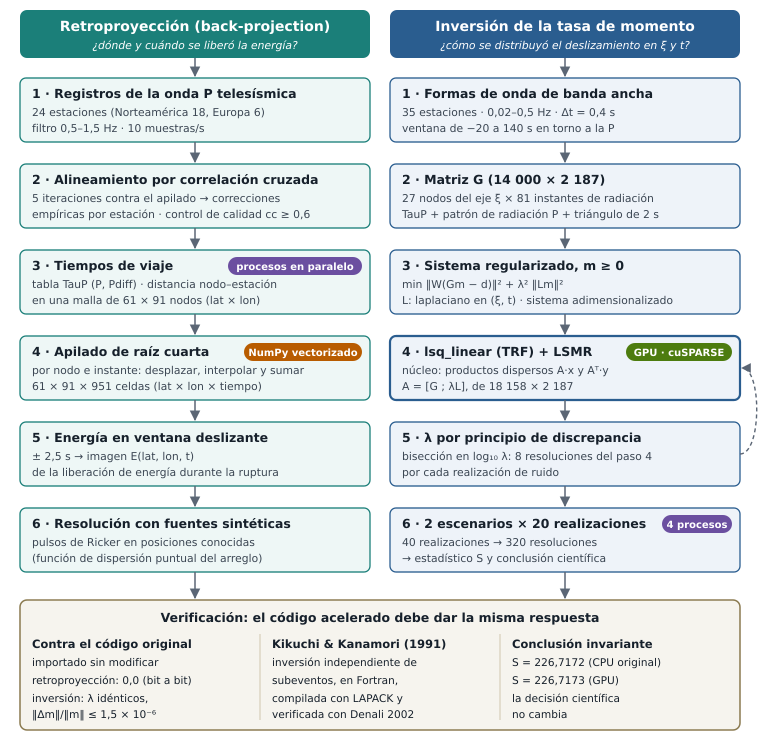

Método · las dos cadenas de cálculo — La Guaira, 24-jun-2026
De los registros a la respuesta: qué entra, qué sale y qué decisión hay en cada eslabón de la retroproyección y de la inversión — y dónde se aceleró el cálculo sin que cambiara el resultado.
Las páginas de la retroproyección y de la inversión explican la física de cada método. Esta explica la ejecución: los dos encadenamientos de algoritmos tal como corren en el código, con las dimensiones reales de cada objeto intermedio. Desde el punto de vista computacional son dos problemas distintos. La retroproyección es una suma masiva de señales interpoladas sobre una malla de espacio y tiempo: muy paralelizable, pero barata. La inversión es un problema de mínimos cuadrados disperso con restricción de no negatividad que hay que resolver cientos de veces; su costo lo dominan los productos matriz-vector y lo limita el ancho de banda de memoria, no la capacidad de cálculo. Ahí está casi todo el tiempo.

El código es retroproyeccion.py. Devuelve una imagen $E(\text{lat},\text{lon},t)$ de dónde y cuándo se liberó energía, sin suponer cuántas fuentes hay. Todo el cálculo se hace en relativo: las trazas se alinean sobre la P del primer sismo, de modo que la imagen no depende de la exactitud absoluta del modelo de Tierra.
Entra: las componentes verticales de las estaciones en el rango telesísmico, 30°–95°. El arreglo útil es Norteamérica, 20 estaciones entre 31° y 78° de distancia, de las que 18 superan el control de calidad del paso 2; Europa aporta 6 más como contraste independiente: 24 en total. Las dos ventanas de cada estación (una por sismo) se unen en un registro continuo de unos 400 s; se filtra en la banda 0,5–1,5 Hz (Butterworth de cuatro polos) y se remuestrea a 10 muestras/s.
Sale: una lista de trazas, cada una con su tiempo de inicio, sus muestras y las coordenadas de la estación. Hay una circunstancia favorable que conviene decir aquí: los dos epicentros se separan casi exactamente hacia el este, y el arreglo mira desde el norte, de modo que la separación cae en la dirección transversal, que es la que mejor resuelve la apertura acimutal.
Entra: las trazas y el tiempo teórico de la P del M 7,2 en cada una. Se recorta una ventana de −3 a +12 s en torno a esa P, se correlaciona cada traza contra el apilado de todas, se desplaza según el mejor desfase (máximo admitido, 4 s) y se repite cinco veces, reconstruyendo el apilado en cada vuelta.
Decisión: entran al apilado solo las trazas con coherencia cc ≥ 0,60; en Norteamérica quedan 18 de 20, con cc mediana 0,81. Una comprobación añadida por el Dr. Mocquet descarta además la traza cuyo máximo alineado cae más de 0,3 s antes de la P teórica, síntoma de que la correlación enganchó ruido.
Sale: una corrección empírica por estación, entre −1,5 y +1,1 s. Absorbe la estructura tridimensional bajo cada sitio y los errores de reloj, y queda referida al hipocentro del M 7,2: por eso la imagen final es relativa a ese punto.
Entra: la malla de fuentes posibles —61 × 91 nodos, de 9° a 12° N y de 70° a 65,5° O cada 0,05°— y las coordenadas de las estaciones. Se tabula una sola vez el tiempo de viaje de P y Pdiff (TauP, modelo IASP91) de 27° a 98° cada 0,05°, y para cada par nodo–estación se calcula la distancia epicentral sobre el elipsoide.
Sale: un arreglo de distancias de 61 × 91 × n estaciones. Paralelización: este cálculo geodésico es el que se reparte entre procesos, por filas de latitud; cada proceso ejecuta la misma función sobre su bloque, y el resultado es idéntico al de la versión en serie.
Entra: las trazas alineadas, las correcciones y las distancias. Para cada nodo y cada uno de los 951 instantes de radiación (de −5 a 90 s cada 0,1 s), cada traza se desplaza el tiempo de viaje al nodo más su corrección, se interpola y se suma. La suma no es de las trazas sino de sus raíces cuartas con signo; el resultado se divide por el número de estaciones y se eleva de nuevo a la cuarta. La raíz comprime las amplitudes grandes, de modo que una sola traza fuera de fase no puede dominar la suma y lo incoherente se suprime.
Sale: el apilado $S(\text{lat},\text{lon},t)$, de 61 × 91 × 951 celdas. Paralelización: la versión original recorre nodo por nodo en tres bucles; la vectorizada con NumPy interpola cada estación sobre la malla completa de una vez y suma las estaciones en el mismo orden, así que el apilado es idéntico elemento a elemento (diferencia 0,0, bit a bit).
Entra: el apilado. Se eleva al cuadrado y se promedia en una ventana de ±2,5 s (51 muestras).
Sale: la imagen $E(\text{lat},\text{lon},t)$: unos 5,3 millones de celdas. Leerla es buscar, para cada instante, dónde está el máximo de $E$; eso da la trayectoria de la radiación durante la ruptura, que es lo que muestra la sección 04 de la portada.
Entra: fuentes de posición y tiempo conocidos. Para cada estación se construye una traza sintética con pulsos de Ricker (frecuencia central 1 Hz) colocados en el tiempo de llegada teórico más la misma corrección de estación del paso 2, sobre el mismo eje de tiempo del registro real. Después se pasan por los pasos 3 a 5 exactamente igual que los datos.
Sale: la función de dispersión puntual del arreglo: cuánto se ensancha y hacia dónde se desplaza una fuente puntual vista por esta geometría. Es lo que permite decir que los 149 km entre las dos fuentes se resuelven, y es también la base del control nulo de la sección 11.
El código base es faseB/fb_comun.py, fb_sinteticos.py y fb_inversion.py. Lo que sigue es la cadena de la prueba de recuperación sintética: la pregunta previa de si la cobertura disponible distingue un hueco de 12 s, contestada antes de tocar el dato real. Todos los parámetros están fijados en el pre-registro (sección 10 de la portada).
Entra: las verticales entre 30° y 90°, filtradas a 0,02–0,5 Hz y remuestreadas a Δt = 0,4 s. Decisión: se exige una relación señal/ruido ≥ 3, medida con 60 s de ruido antes de la P frente a la señal que sigue; de 35 candidatas quedan 32 sobre el dato real. La ventana de análisis va de −20 a 140 s en torno a la P: 400 muestras por estación.
Sale: el vector de datos $\mathbf{d}$ —35 estaciones × 400 muestras = 14 000 filas en la prueba sintética— y una matriz diagonal de pesos $W$ con la inversa de la desviación típica del ruido pre-evento de cada estación: una estación ruidosa pesa menos.
Entra: la geometría de la fuente y el modelo directo. La fuente es una línea de nodos sobre la traza cartografiada: ξ de 0 a 260 km cada 10 km (27 nodos, medidos desde el hipocentro del M 7,2) y $t_k$ de 0 a 80 s cada 1 s (81 instantes). La fuente elemental es un triángulo de 2 s de base. El mecanismo se fija —rumbo 81°, buzamiento 78°, deslizamiento −175°— y no se invierte.
Cada columna de $G$ es lo que produciría en todas las estaciones un nodo encendido en un instante: el desplazamiento de campo lejano de la onda P de un doble par,
$$ u(t) \;=\; \frac{F_P(\varphi,i)\,g(\Delta)}{4\pi\rho\alpha^{3}}\;\dot M\!\left(t - T - \delta\tau\right), $$con $F_P$ el patrón de radiación, $g(\Delta)$ la expansión geométrica, $T$ el tiempo de viaje (TauP) y $\delta\tau$ la corrección empírica de la estación. Por ser lineal en el momento, apilar una columna por cada par (nodo, instante) da directamente $G$.
Sale: $G$ de 14 000 × 2 187, dispersa: cada columna solo tiene valores en la ventana de 2 s de cada estación. Sobre el dato real las columnas se sustituyen por funciones de Green de AxiSEM, que contienen las fases pP y sP; el ensamblaje es el mismo.
Entra: $G$, $\mathbf{d}$ y $W$. El problema que se resuelve es
$$ \min_{\mathbf{m}\,\ge\,0}\; \| W(G\mathbf{m}-\mathbf{d}) \|^{2} \;+\; \lambda^{2}\,\| L\mathbf{m} \|^{2}, $$donde $L$ es el laplaciano de segundas diferencias en ξ y en $t$ —dos bloques, construidos como productos de Kronecker— y $\mathbf{m}\ge 0$ dice que el momento no puede ser negativo. Decisión imprescindible: el sistema se adimensionaliza. Las incógnitas son momentos de ~1018 N·m y los coeficientes de $G$ de ~10−14; con esa disparidad los solvers iterativos se estancan y devuelven soluciones peores que el propio modelo verdadero, que es factible. Se reescala a incógnitas de orden 1 (1018 N·m por celda) y a dato de orden 1 (norma de $W\mathbf{d}$ por muestra).
Sale: el sistema aumentado $A = [\,WG\,;\;\lambda L\,]$, de 18 158 × 2 187: las 14 000 filas del dato más las 4 158 del laplaciano.
Entra: $A$, el dato escalado y un valor de λ. Se resuelve con scipy.optimize.lsq_linear, método de región de confianza reflexivo (TRF) con cotas $(0,\infty)$, que en cada subproblema llama al solver iterativo LSMR; tolerancia automática, 250 iteraciones como máximo.
Dónde está el costo: LSMR no factoriza nada; solo necesita los productos $A\mathbf{x}$ y $A^{\mathsf T}\mathbf{y}$, y los repite decenas de veces por resolución. Con una matriz dispersa de este tamaño, cada producto es un recorrido por memoria más que un cálculo. GPU: la versión acelerada sustituye solo ese operador —$A$ se entrega a lsq_linear como un LinearOperator cuyos productos calcula cuSPARSE— y deja intactos el algoritmo, sus parámetros y la construcción de $A$. Los resultados difieren del original únicamente por redondeo, porque cuSPARSE suma en otro orden que SciPy.
Sale: $\mathbf{m}$ en unidades físicas, tras deshacer el escalado.
Entra: el desajuste RMS ponderado del ruido añadido en esa realización, que es el objetivo: una solución no debe ajustar mejor que lo que permite el ruido. Se busca el mayor λ cuyo desajuste no supere el objetivo, por bisección en $\log_{10}\lambda$ entre 10−5 y 10, en siete pasos.
Decisión: cuando el dato contiene energía que $G$ no puede explicar, el objetivo es inalcanzable y la bisección colapsaría al λ mínimo. Se aplica entonces el principio de discrepancia generalizado: se mide primero el suelo de desajuste alcanzable y, si supera el objetivo, se toma como objetivo 1,05 veces ese suelo. Y una regla que no se negocia: el mismo criterio para los dos escenarios; queda prohibido ajustar λ por escenario.
Sale: λ y su $\mathbf{m}$. Cuesta unas ocho resoluciones del paso 4 por cada realización de ruido: la flecha de retorno del diagrama.
Entra: dos historias de ruptura con el mismo momento total (2,54 × 1020 N·m, el del tensor de momento del USGS): (a) un doblete con hueco —el M 7,2 al oeste, silencio entre 20 y 32 s, el M 7,5 al este— y (b) un frente continuo a 3,3 km/s. Cada una se convierte en sismogramas con la misma $G$, se le añade ruido real de cada estación (su ruido pre-evento) y se invierte con los pasos 3 a 5; veinte realizaciones de ruido por escenario.
Sale: 40 realizaciones, 320 resoluciones del solver, y el estadístico de decisión: la fracción $f$ del momento que la inversión coloca en la ventana 20–32 s, y la separación entre escenarios
$$ S \;=\; \frac{\mu_b-\mu_a}{\sqrt{\sigma_a^{2}+\sigma_b^{2}}}, $$con el criterio pre-registrado $S \ge 2$. Resultado: $S = 226{,}7$; la cobertura distingue el hueco, y se procede al dato real. Paralelización: las realizaciones se reparten entre cuatro procesos; cada uno llama exactamente a la misma función con los mismos argumentos que el original, con un solo hilo BLAS por proceso, de modo que el paralelismo está en los procesos y no en las bibliotecas.
«Da la misma respuesta» no puede quedar como una impresión visual. Se definió con cuatro reglas. El oráculo es el código original, sin tocarlo: las pruebas importan los módulos originales tal como están y los ejecutan con las mismas entradas; no se compara contra una copia ni contra una reimplementación. Se acelera lo mínimo: en la inversión solo se sustituyó el operador lineal; el solver, la selección de λ y el estadístico son el código original, así que lo que hay que verificar es pequeño y está aislado. Se verifica por niveles, de la operación más pequeña a la conclusión científica. Y la tolerancia depende de la aritmética: donde la versión acelerada hace las mismas operaciones en el mismo orden se exige igualdad bit a bit; donde cambia el orden de las sumas se exige una cota relativa explícita; y en todos los casos la conclusión no debe cambiar.
| Nivel | Qué se compara | Criterio | Resultado |
|---|---|---|---|
| 1 · operación | productos Ax y ATy en GPU frente a SciPy | cota relativa 10−12 | cumple |
| 2 · componente | una resolución completa del solver con datos reales | mismo m y mismo número de iteraciones | ‖Δm‖/‖m‖ = 2–6 × 10−10; 22 iteraciones en ambos |
| 3 · corrida | las 40 realizaciones frente al resultado canónico | λ idénticos; f y m dentro de cota | λ ≤ 7 × 10−14; |Δf| ≤ 5 × 10−9; ‖Δm‖/‖m‖ ≤ 1,5 × 10−6 |
| 4 · conclusión | el estadístico S y la decisión | la decisión no cambia | 226,7173 frente a 226,7172; misma decisión |
| retroproyección | la imagen completa, 61 × 91 × 951, frente al original | bit a bit | diferencia 0,0 |
| entre máquinas | la misma retroproyección en otra computadora | redondeo de máquina | ≤ 7 × 10−11 |
| independiente | Kikuchi y Kanamori (1991), Fortran | coherencia física del resultado | compilado y verificado con Denali 2002; comparación cuantitativa pendiente |
Dos detalles que conviene explicar. Por qué el nivel 3 admite más diferencia que el 2: el solver es iterativo, y una diferencia de redondeo puede hacer que se detenga una o varias iteraciones antes o después (81 frente a 69 en alguna realización); por eso el criterio no se fija en el número de iteraciones sino en las magnitudes que deciden el resultado, λ, $f$ y $S$. Las pruebas deben poder fallar: una primera prueba sintética de la retroproyección pasaba siempre, porque las señales no cubrían la ventana de cálculo y ambas versiones devolvían ceros. Se corrigió para exigir una imagen no nula. Las nueve pruebas de la suite pasan con la versión actual.
La cadena anterior es la de la prueba sintética. Sobre el registro observado la inversión conserva los mismos pasos, con cuatro diferencias que se decidieron por criterios de validez del operador, no por el resultado:
lsq_linear, que tardaba más de quince minutos por cada λ. Es el mismo mínimo del mismo problema convexo, no una aproximación.Con eso, el momento que cae en la ventana intermedia es $f = 0{,}0036$ en el dato observado, frente al $f = 0{,}1652 \pm 0{,}0450$ que exigiría un frente continuo; la separación, con el control calibrado a la misma bondad de ajuste, es $S = 2{,}62$. Cómo se calibró ese control y qué certifica está en la página de verificación y controles; el aparato estadístico que lo rodea, en la de el aparato estadístico.
lsq_linear).